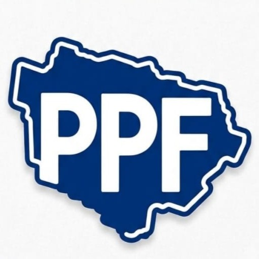
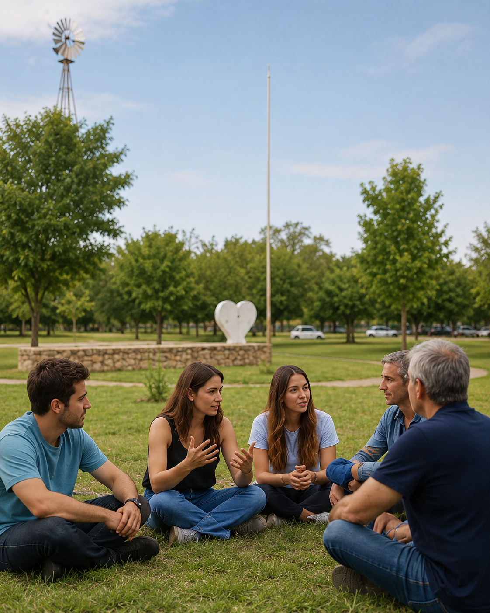
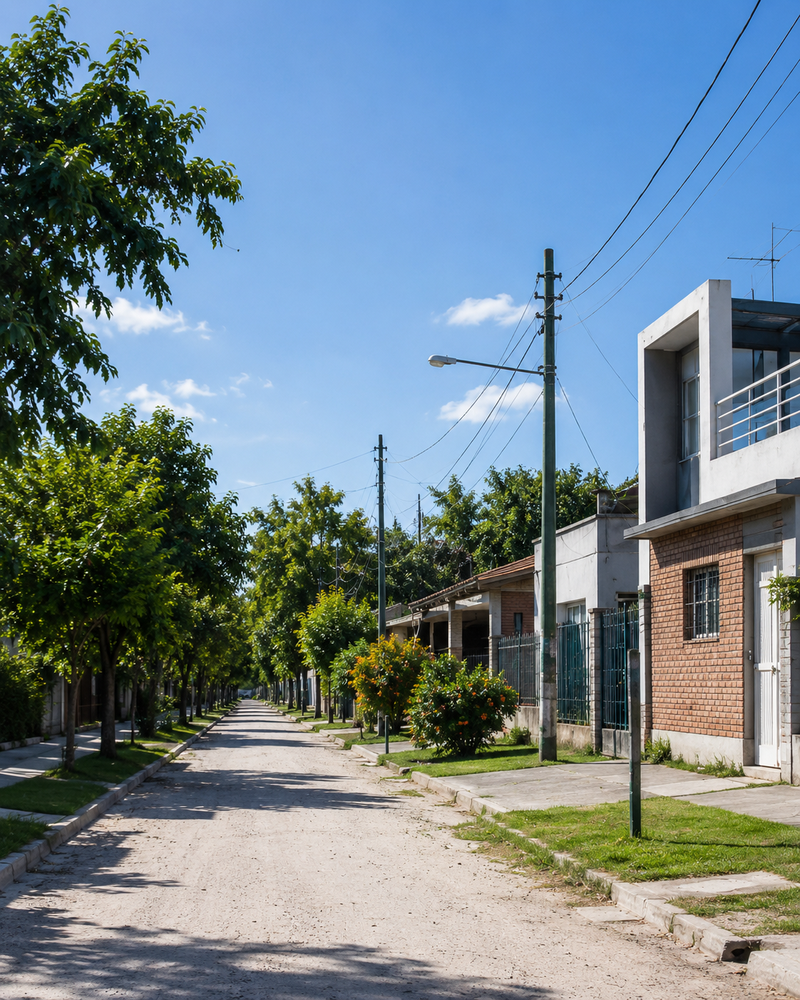
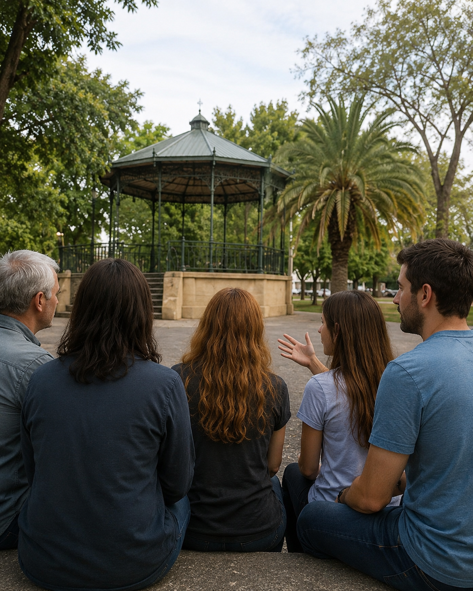
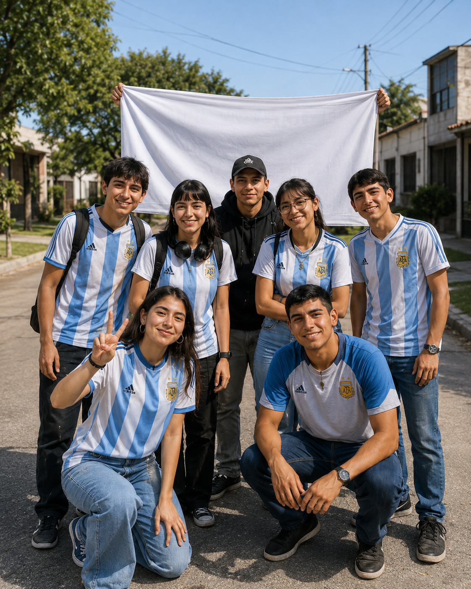

Investigación y diagnóstico
Reunimos información, analizamos problemáticas y generamos conocimiento útil sobre la ciudad.

Centro de Estudios en● Funes · Santa Fe
Investigamos, pensamos y proponemos políticas públicas para una ciudad más justa, democrática y participativa.
Participá. Proponé. Transformá.

Quiénes somos
Somos un espacio para investigar, pensar, proponer y actuar juntos por una Funes más justa, democrática y participativa.
Creemos que las mejores políticas públicas nacen de combinar información, experiencia y escucha. Por eso abrimos las puertas a vecinos y vecinas que quieran acercar ideas y construir propuestas.
Quiero conocer más ↗
Qué hacemos
Trabajamos con una mirada plural, rigurosa y cercana para comprender los desafíos de Funes y convertirlos en oportunidades de mejora.
Reunimos información, analizamos problemáticas y generamos conocimiento útil sobre la ciudad.
Elaboramos propuestas pensadas para responder a necesidades reales y mejorar la vida cotidiana.

Ideamos y desarrollamos propuestas junto a vecinos y vecinas para mejorar nuestra ciudad.
Abrimos espacios de diálogo para escuchar experiencias, sumar miradas y construir acuerdos.
Pensar Funes
Las líneas de trabajo se construyen con la comunidad y pueden crecer a partir de nuevas necesidades, datos y propuestas.
Centro de contenidos
Un espacio preparado para publicar investigaciones, documentos, fotografías y videos del Centro.
Biblioteca

FOTOSGalería
Multimedia
Vista demostrativa del espacio destinado a futuros contenidos.
Sé parte
Si tenés una idea, una inquietud sobre Funes o ganas de colaborar, queremos escucharte. El primer paso es iniciar una conversación.
Acercá tu propuesta ↗Participá
Contanos qué tema te preocupa o qué oportunidad ves para nuestra ciudad.
Intercambiamos información y perspectivas para comprender mejor el desafío.
Transformamos ideas y evidencia en alternativas concretas para Funes.
El Centro invita a vecinos y vecinas que quieran aportar ideas, experiencias y conocimientos para pensar el futuro de Funes.
Podés iniciar el contacto por WhatsApp. Contanos brevemente el tema y desde el Centro podrán continuar la conversación con vos.
La web está preparada para reunir documentos e informes en un mismo espacio, de manera clara y accesible.
Sí. El centro de contenidos contempla galerías de imágenes y material audiovisual además de documentos.
Centro de Estudios en Políticas Públicas de Funes
Sumate a construir una ciudad con más diálogo, conocimiento y participación.
Quiero participar ↗